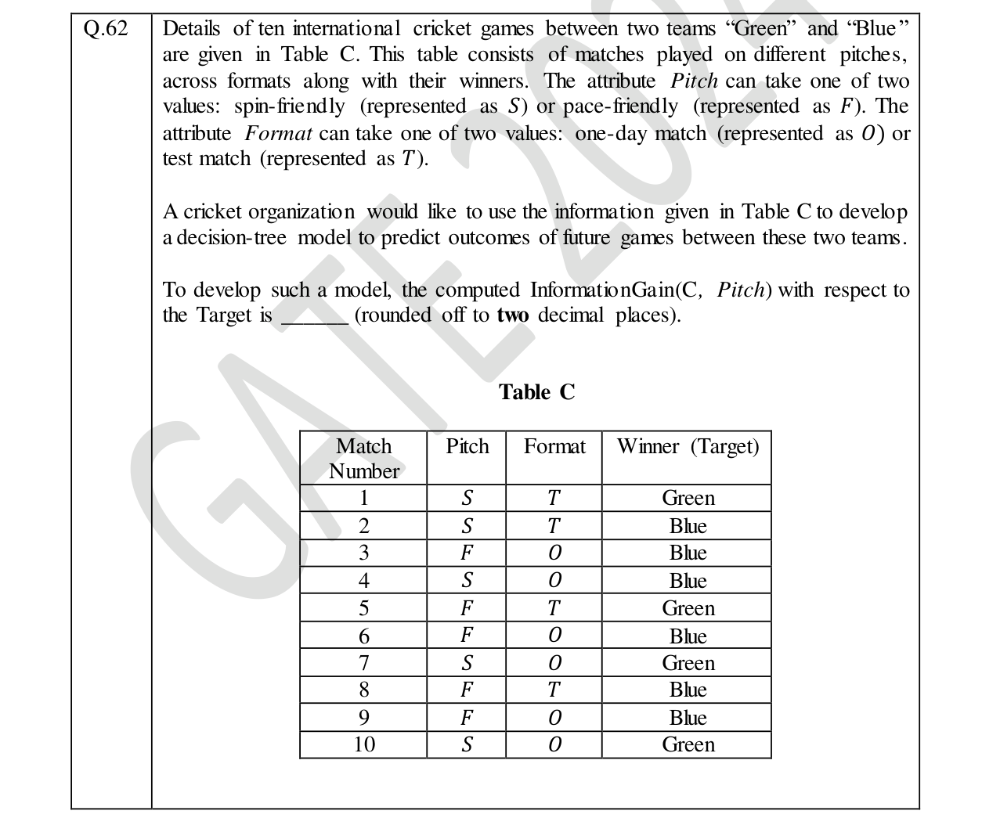
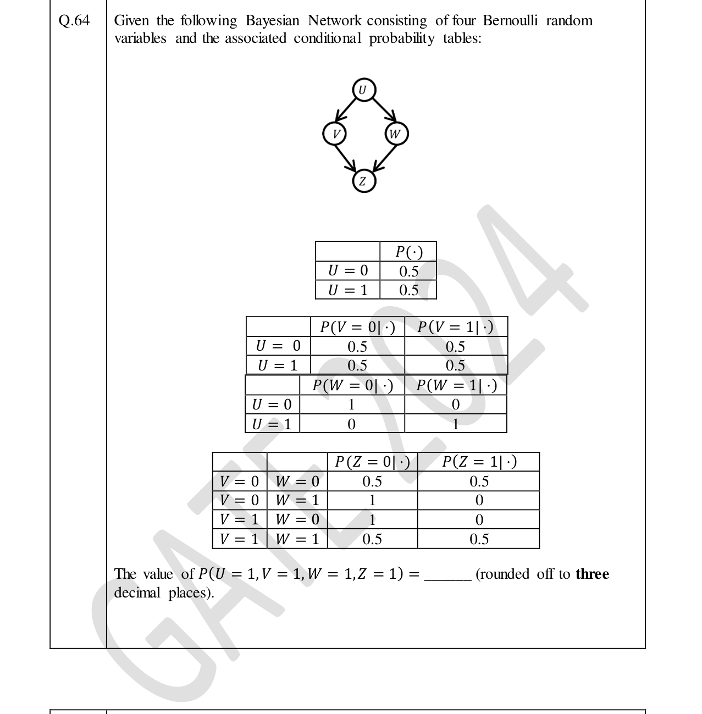

Real GATE DA 2024 questions from the Probability & Statistics part of our syllabus. Attempt each (MCQ, MSQ or numerical) and check the official answer.
GATE DA 2024DistributionsMCQ1 mark
Q11. Consider the statements: (i) the mean and variance of a Poisson random variable are equal; (ii) for a standard normal random variable, the mean is zero and the variance is one. Which ONE is correct?
Single correct (MCQ).
Poisson$(\lambda)$ has mean $=$ variance $=\lambda$; the standard normal is $\mathcal{N}(0,1)$. Both statements hold.
GATE DA 2024ProbabilityMCQ1 mark
Q12. Three fair coins are tossed independently. $T$ is the event of two or more heads; $S$ is the event of two or more tails. What is $P(T\cap S)$?
Single correct (MCQ).
With only three tosses you cannot get $\ge2$ heads and $\ge2$ tails at once, so $T\cap S=\varnothing$ and $P=0$.
GATE DA 2024Conditional independenceMCQ1 mark
Q24. Five random variables have joint distribution $P(V,W,X,Y,Z)=P(V)\,P(W)\,P(X\mid V,W)\,P(Y\mid X)\,P(Z\mid X)$. Which ONE statement is FALSE?
Single correct (MCQ).
$V$ and $W$ are parents of the common child $X$ (a collider); conditioning on $X$ makes them dependent, so C is false. $X$ separates the others, so A, B, D are true.
GATE DA 2024Descriptive statisticsMCQ1 mark
Q27. For the attribute income, the min, max, mean and standard deviation are $46000$, $170000$, $96000$ and $21000$ (in $\textsf{₹}$). The z-score normalized value of $\textsf{₹}106000$ is closest to:
Single correct (MCQ).
$z=\dfrac{x-\mu}{\sigma}=\dfrac{106000-96000}{21000}\approx0.476$ (the min/max are distractors).
GATE DA 2024Sample statisticsNAT1 mark
Q34. The sample average of 50 data points is 40. The updated sample average after including a new data point of value 142 is ______.
Numerical answer (NAT) — type a value and press Check.
$\dfrac{50\times40+142}{51}=\dfrac{2142}{51}=42$.
GATE DA 2024ExpectationMCQ2 marks
Q36. A fair six-sided die is thrown repeatedly and independently. What is the expected number of throws until two consecutive even numbers appear?
Single correct (MCQ).
With $p=P(\text{even})=\tfrac12$, the expected wait for two consecutive successes is $\dfrac1p+\dfrac1{p^2}=2+4=6$.
GATE DA 2024Random variablesNAT2 marks
Q56. Let $X\sim\text{Uniform}[1,3]$ and $Y\sim\text{Uniform}[2,4]$ be independent. The probability $P(X\ge Y)$ is ______ (3 dp).
Numerical answer (NAT) — type a value and press Check.
With joint density $\tfrac14$ on $[1,3]\times[2,4]$, the region $x\ge y$ has area $\int_2^3 (x-2)\,dx=\tfrac12$, so $P=\tfrac14\cdot\tfrac12=0.125$.
GATE DA 2024DistributionsNAT2 marks
Q57. Let $X\sim\text{Exponential}(\lambda)$ with pdf $f(x)=\lambda e^{-\lambda x}$ for $x\ge0$. If $5\,E(X)=\operatorname{Var}(X)$, the value of $\lambda$ is ______ (1 dp).
Numerical answer (NAT) — type a value and press Check.
$E(X)=\tfrac1\lambda$, $\operatorname{Var}(X)=\tfrac1{\lambda^2}$. So $\tfrac5\lambda=\tfrac1{\lambda^2}\Rightarrow\lambda=0.2$.
GATE DA 2024Conditional probabilityNAT2 marks
Q58. For events $T$ and $S$: $P(T^c)=0.6$, $P(S\mid T)=0.3$, $P(S\mid T^c)=0.6$. Then $P(T\mid S)$ is ______ (2 dp).
Numerical answer (NAT) — type a value and press Check.
$P(S)=0.3(0.4)+0.6(0.6)=0.48$, so $P(T\mid S)=\dfrac{0.3\times0.4}{0.48}=0.25$.
GATE DA 2024Probability (from data)NAT2 marks

Numerical answer (NAT) — type a value and press Check.
GATE DA 2024Joint probabilityNAT2 marks

Numerical answer (NAT) — type a value and press Check.
GATE DA 2024CovarianceNAT2 marks
Q65. Two fair coins are tossed independently. $X=1$ if both tosses are heads (else $0$); $Y=1$ if at least one toss is heads (else $0$). The covariance of $X$ and $Y$ is ______ (3 dp).
Numerical answer (NAT) — type a value and press Check.